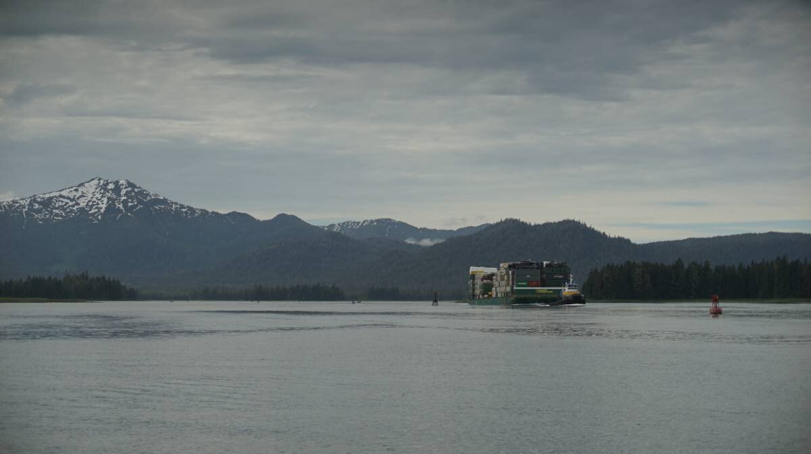

petersburg
On June 16th, we left Deception Point Cove at 0700 to make our way north through Wrangell Narrows. We hesitated to take this path, because it's a very busy artery, but it is the fastest way to Petersburg, and to Tracy Arm. As its name implies, it's an 18 NM-long narrow that joins Sumner Strait with Frederick Sound. The waters narrow at certain points, and are bordered by rocks, small islands and shallows. It is very straightforward, the channel markers are everywhere and keep you from wandering into nearby dangers.
Deception Point Cove. A note on Deception Point Cove. It's a really handy stop-over if waiting for transit Wrangell Narrows, we arrived there at 1600 and stayed overnight. The 10-15 SW knot winds bent around the corner(from the SE) and reached us into the anchorage a little, but there is some protection in the bay from swell because of shallows and a large reef. The reef does shrink at high tide, but it still helped a little. The wind died late at night. The depths in this bay are very good, very different from our anchoring in Southeast Alaska so far! We dropped the hook in 10 feet at low tide(!!) for a max of 18 feet that day(high tide wasn't that big that day). When hauling the anchor, we saw that the bottom was sticky grey mud, there was also a bit of kelp on the fluke, but nothing that compromised holding. A fishing boat was moored with us in the bay near the opening. Two logs are tethered in place in the center of the bay, apparently there for log booms. They take up a bit of room, but the bay is big and there is plenty of anchoring space. The logs seem to move with the currents and wind, which helps.
A lot of tug boats towing large barges, commercial fishing boats and large passenger ships(like the Alaska ferry) use Wrangell Narrows. Some parts of the narrows are very constricted, and if a large ship is coming through we have to get out of its way. The goal of the game is to constantly look behind, or ahead, and if a big vessel is coming, it's time to find a place to duck out of the channel to let them by.
As soon as we left the anchorage, we saw a tug boat on AIS, a big one, pulling a very large barge. We kept an eye on it as we proceeded through the narrows. It caught up to us around Green Rocks, we moved out of the channel and into the bight just east of Christmas Tree Rock to let it pass. We knew that this area was ahead, it wasn't too shallow, few rocks, a very good place to idle. It was powering north at 10 knots, pulling a heavy barge carrying containers, and construction vehicles. The tug pulling it was gargantuan.
We encountered many more boats in Wrangell Narrows, mostly small skiffs, or medium-sized cruising or fishing boats. All of these were easy to deal with, as long as we kept to our side of the channel.
Like Blake Channel(see Wrangell), this is the kind of channel where the current meets from the north and south between channel markers 44 and 50(what we refer to as the pinch, one of the narrowest points). To not have to suffer an opposing current, it's a good idea to time the northbound transit on the last of a flood. As the flood(south current) lessens to zero, if the boat is positioned where the north and south currents meet, the north current will start to ebb and carry you north. We knew we had to get to the pinch at 0940, we arrived at 0930. When you know your boat well, timing arrivals with precision is not too difficult, we always give ourselves a bit of extra time to make speed adjustments... because there is always something that happens that slows us down(like letting that tug pass).

Once past Turn Point, as the land drew away, emerged a beautiful snowy mountain range just behind the city of Petersburg(Séet Ká, as referred to by the Tlingit). With the port in sight, it was also time to call the harbormaster on the radio to get a slip assignment. It is possible to anchor at various points along the narrows, but we decided to push on. Slips in this harbor are not expensive(26$USD for one day for our boat, about 35$CAD, w/o power).
Like in Ketchikan, transient boats are assigned to slips that the owners have temporarily vacated. The harbormaster assigned us a spot on the south side of the south finger in North Harbor. We're glad they assigned us to the north docks, that way we are closer to the harbourmaster's office, where the showers are. We were dying for a hot shower, our last one was in Prince Rupert(btw, the showers here are awesome).
Because we arrived with the start of a rising flood, some current runs through the channel leading to the docks, and affects docking/steering. We could feel a bit of current pushing us sideways as we went down the row of docks, but it wasn't strong enough, not yet, on large tidal exchanges it may be very difficult to get to a slip.
We took a short walk in town, just to take in the city. It's a really lovely place. We didn't get to see much because arrived on a sunday, many shops and restaurants were shut, the only business that was open was a small, very wholesome, road-side lemonade stand operated by two enterprising kids, a thing we thought only existed in Archie comics.
The town has Norwegian roots, which explains some of the street names, Norway flags, and decorations around town, but in the 1900's, prior to Peter Buschmann and the arrival of other Scandinavian immigrants, the north of Mitkof Island was already long occupied by Tlingit people.